Seção Tecnologias — referências
Prints capturados em 01/11/2026 (Playwright, 1440px). Arquivos soltos nesta mesma pasta.
Sua referência
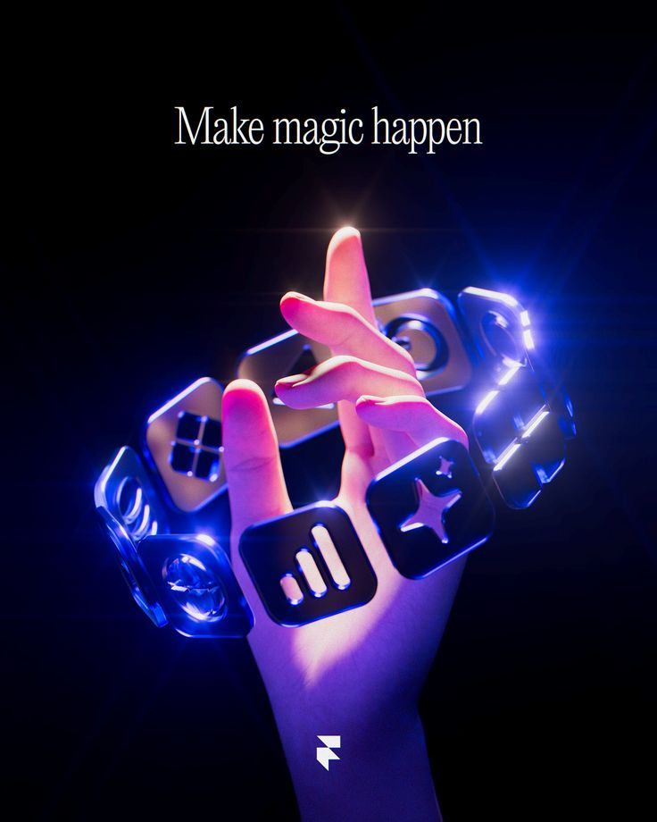
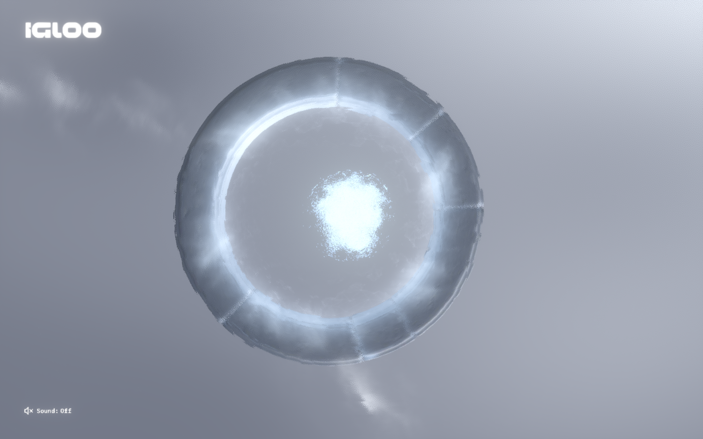
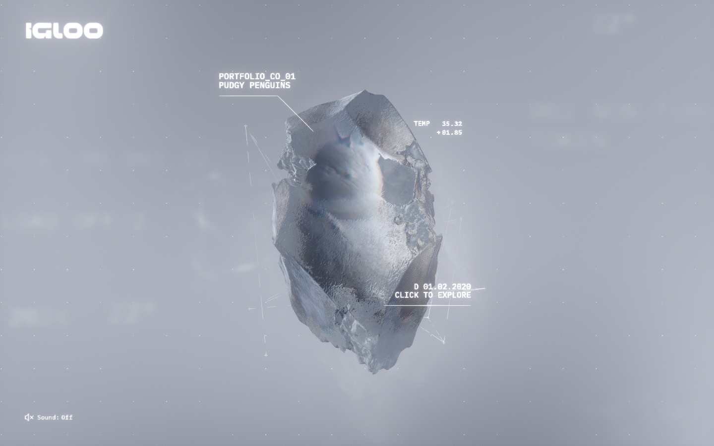
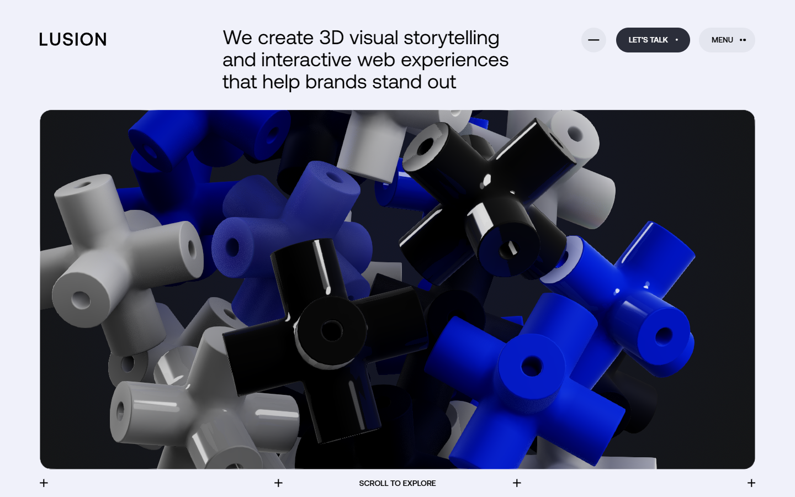
Seções de tecnologia que funcionam
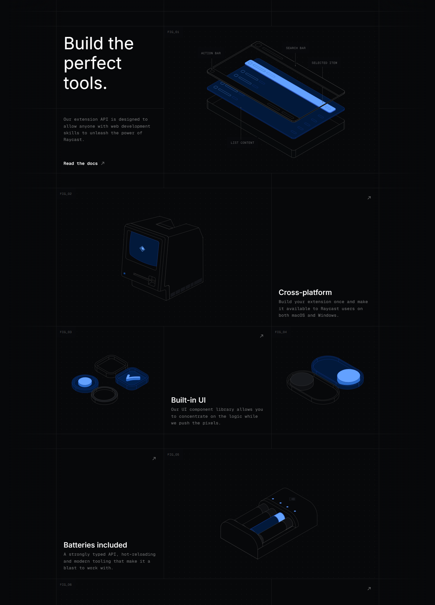
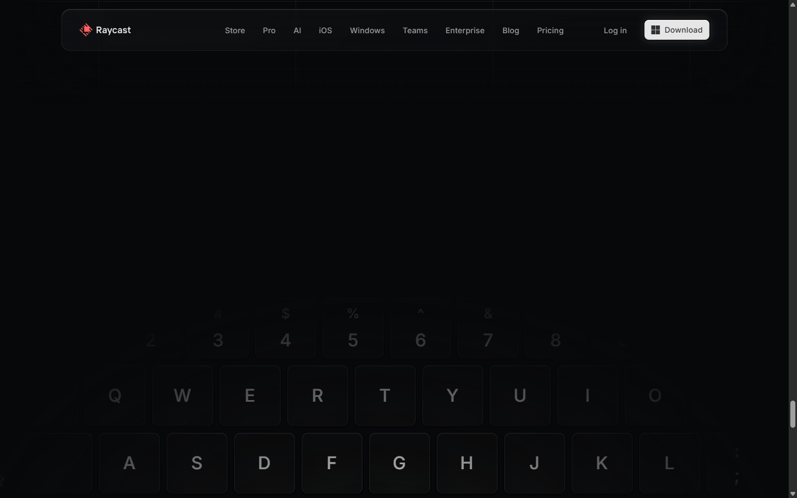
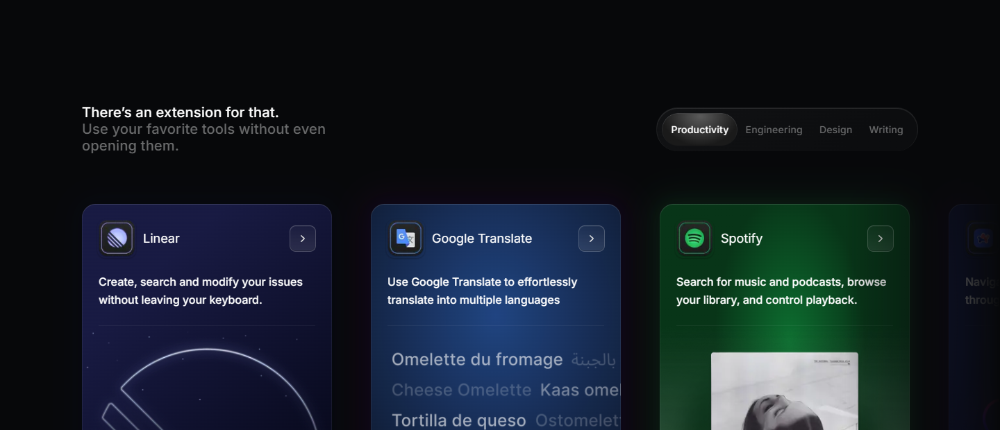
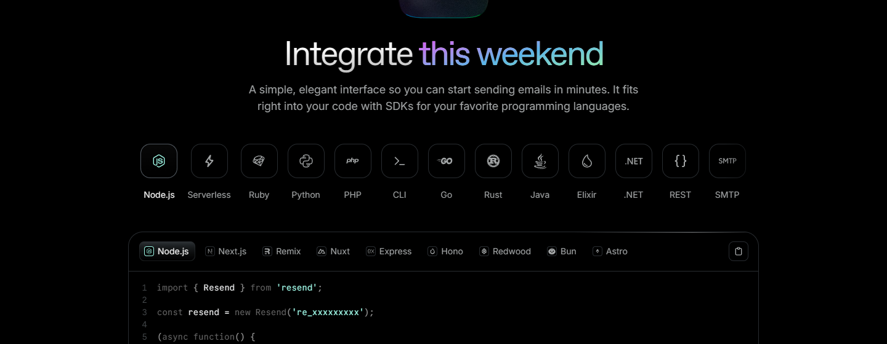
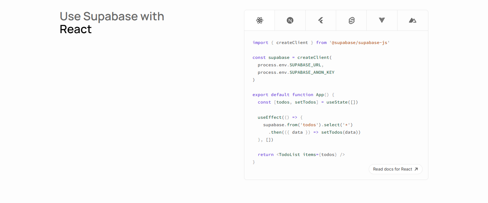
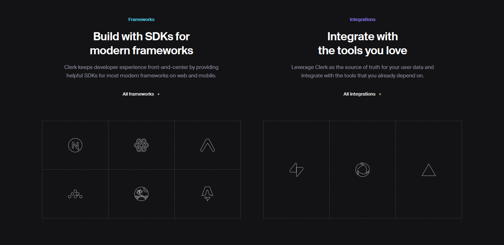
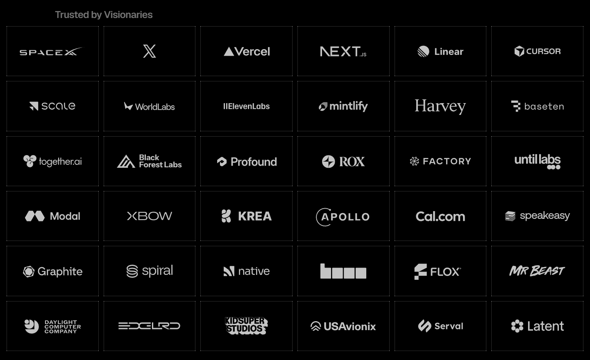
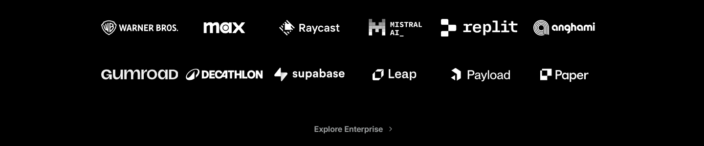
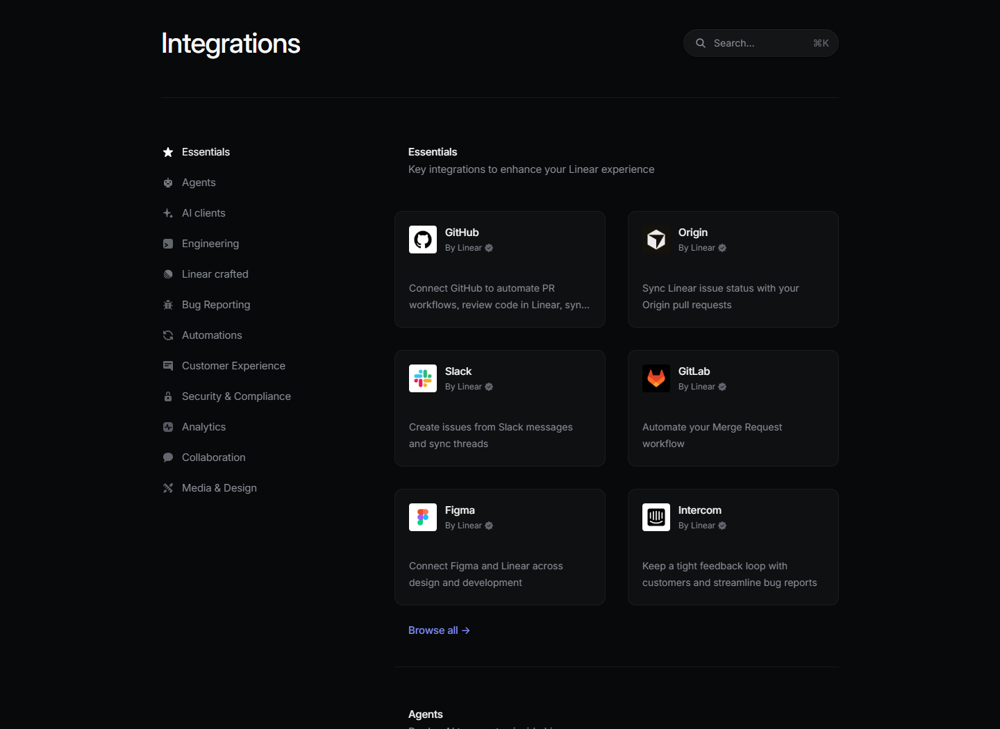
Dá para fazer o seu modelo? Sim. Três caminhos
| A · Pré-render (Blender → vídeo/sequência no scroll) | B · Tempo real total (Three.js) | C · Híbrido (recomendado) | |
|---|---|---|---|
| Como | Cena inteira no Blender (Cycles), exporta frames, scroll controla o frame. | Mão GLB + cards com MeshPhysicalMaterial (transmission) + logos SVG extrudados + bloom. | Mão pré-renderizada (imagem/sequência com alpha) ou no dither 2D que já existe; anel de cards em Three.js ao vivo. |
| Visual | Igual ao pôster. | Vidro bom; pele realista fica "plástica". | Mão bonita + cards de verdade. |
| Interação | Nenhuma além do scroll. | Total. | Cards respondem (hover/toque → nome + o que entregamos com isso). |
| Peso | Vídeo/frames pesados. | Mais caro: transmission = passe extra de render, somado às cenas WebGL que já existem. | Médio; dá para pausar fora da viewport e entrar no Loading Gate. |